Working notes for understanding, not a paper. Data from 19–20 October 2026 (lab PC runs in runs/, simulation in sim/).
One-paragraph summary. We used the photonic chip's MZI mesh as a small optical switchboard that carries the busiest spike traffic between five emulated neuromorphic cores. After calibrating the lasers, detectors and heaters, and fixing a detector readout problem and a laser cross-talk problem, the router delivered 39,812 replayed spikes with 29 errors (7.3×10−4), 27 of them during software stalls (2 in the 38,810 time-kept slots), switched routes in about 35 µs, carried 58% of all spike packets, and left the network's accuracy unchanged (91.0%). A model of the shared bus shows this removes queueing delay when traffic approaches the bus's limit; a scaling study shows the benefit holds best when traffic is concentrated on a few core pairs.
| Spike / spike packet | A neuron "firing". When a neuron fires, its core sends a small message (a packet) to every other core that holds neurons listening to it. |
| Core | A piece of the neural network running on one part of a neuromorphic chip. Here we have 5 cores, emulated in software. |
| Bus | The single shared electronic connection all cores use to send packets. If many packets arrive at once, they wait in a queue (congestion). |
| MZI | Mach–Zehnder interferometer: a two-lane optical switch on the chip. A heater on it sets how the light leaves. |
| BAR / CROSS / 50:50 | The three MZI positions we use. BAR: light stays in its lane. CROSS: light swaps to the other lane. 50:50: light splits evenly into both. |
| Mesh / router | The grid of MZIs. By setting each MZI, light from any laser can be steered to chosen output detectors. |
| Setting (A–D) | One complete choice of MZI positions, i.e. one routing pattern. |
| Detector, photocurrent (nA) | On-chip photodiodes convert light to current; more light = more nA. Our noise floor is about 0.25 nA. |
| Crosstalk, dB | Light arriving from the wrong sender. "20 dB below" means 100× weaker than the real signal (10 dB = 10×, 30 dB = 1,000×). |
| Controller | Software that, every 10 ms of network time, picks the routing that would carry the most traffic. |
| Replay (time-scaled) | Running the network's real spike pattern through the chip in slow motion (here 7.5× slower than real time). |
A spiking neural network (SNN) on a neuromorphic chip is split across several cores. Every spike that leaves a core is sent as a packet over one shared electronic bus. Spiking activity comes in bursts, so the bus periodically gets crowded and packets wait.
Idea: add a few optical express lanes. Each core gets a laser (to send) and a photodiode (to receive); the chip's MZI mesh acts as a switchboard connecting the busiest sender→receiver pairs with light. Everything else stays on the bus. A controller re-points the switchboard as traffic changes. One rule: each photodiode listens to only one sender at a time (otherwise it couldn't tell who fired); one sender may feed several receivers by splitting its light (multicast).
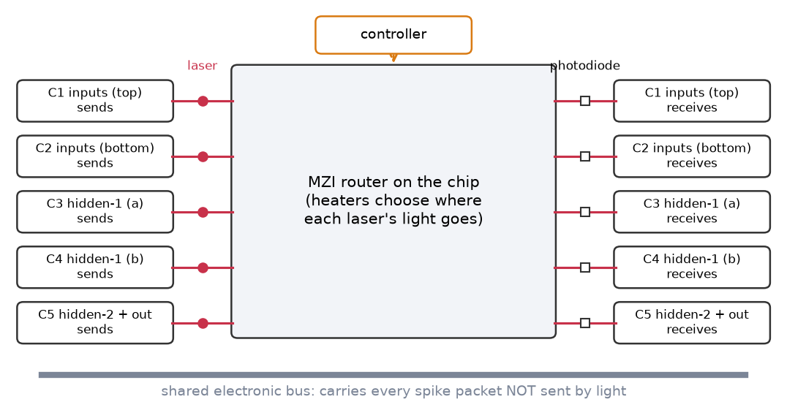
r_c" = MZI joining rows r and r+1 in column c).PD_r_0), one at each row's output (PD_r_5), and four inside the mesh.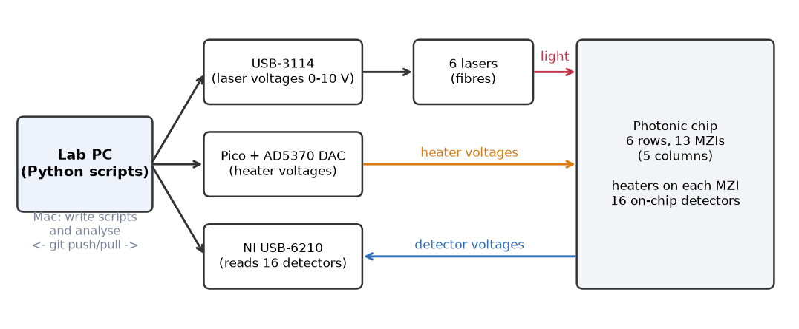
check_setup.py: checks the boards connect, measures detector noise (about 0.25 nA) and which laser lights which row.With all heaters at 0 V, each laser's light came out at a very specific output. That pattern matches a simple rule: at 0 V every MZI sits close to CROSS, so light zig-zags one row per column. This also confirmed the mesh layout we had inferred from the wiring names. The four internal detectors lit up exactly where the zig-zag passes.
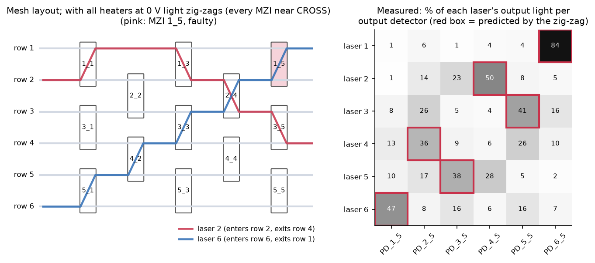
laser_calibration.py)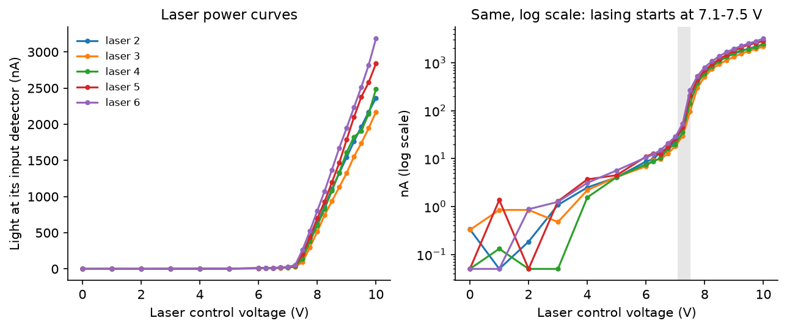
heater_sweep.py)For each MZI, we lit one laser whose light passes through it, swept the heater from 0 to 4.2 V, and watched the two outputs trade light. A fitted curve gives the voltage for CROSS, 50:50 and BAR.
1_5 is faulty: in 2 of 4 runs it jumped suddenly near 1 V and then stopped responding. We never drive it.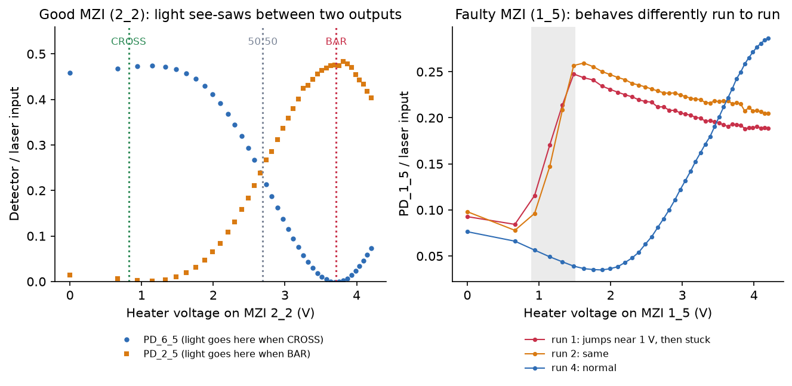
1_5.1_1 and 1_3 at BAR. 1_5 stays at 0 V, where it sits near CROSS, so the light for core C1 simply exits on PD_1_5.2_2 chooses which input core (C1 or C2) multicasts to C3+C4 (split 50:50); 4_2 chooses which hidden core (C3 or C4) sends to C5. The four combinations are settings A–D.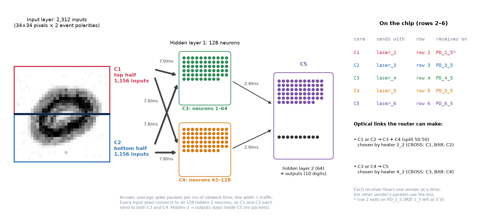
| Setting | Light carries | 2_2 | 4_2 | Used (100-digit replay) |
|---|---|---|---|---|
| A | C2 → C3 + C4, C4 → C5 | BAR | BAR | 882 windows |
| B | C1 → C3 + C4, C3 → C5 | CROSS | CROSS | 463 |
| C | C1 → C3 + C4, C4 → C5 | CROSS | BAR | 1,014 |
| D | C2 → C3 + C4, C3 → C5 | BAR | CROSS | 641 |
The NI board measures its 16 detectors one after another through one shared input. If it moves on too fast, the next measurement still contains part of the previous one. Each detector "inherited" about a third of the detector read just before it. This created fake light in places light cannot reach, distorted some calibrations, and made every reading about one third too low.
Fix: slow the reading so each detector has 100 µs to settle (read_pds() in check_setup.py). Our first idea (read each
channel twice) was rejected by the NI driver. After the fix the leak measured about 0%, and we re-ran the calibrations.
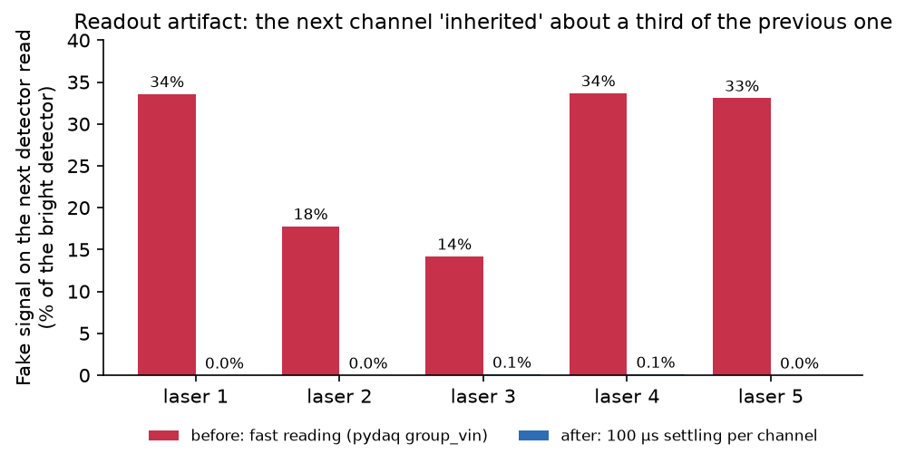
To make all lasers equally bright, we first ran them at slightly different voltages (9.1–9.9 V). Then switching one laser on changed another's power by up to 37%, instantly (so electrical, not heat). At 10 V the effect disappeared (below 2%). All lasers now run at 10 V. Their brightness differs a little, which is harmless because each receiver gets its own detection threshold. We don't yet know exactly why 10 V is immune (the lasers are not saturating there); it does not matter for the results.
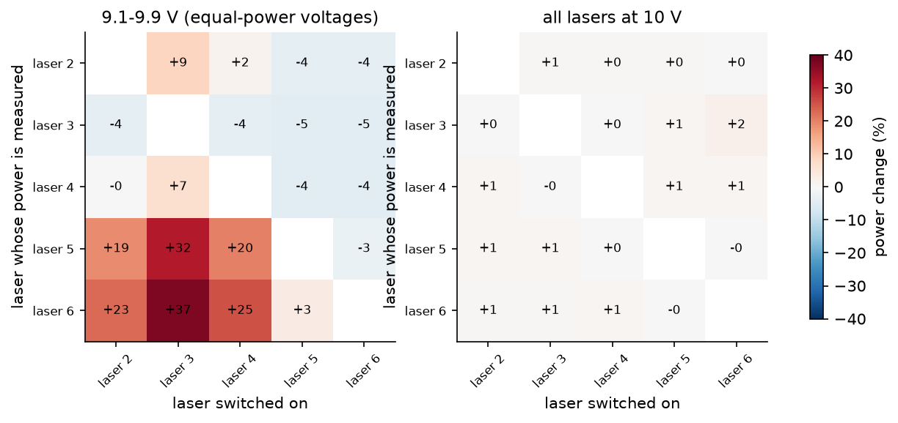
Windows occasionally stalls Python for up to ~90 ms, so a laser isn't pulsed on time. We now flag any time slot where a command ran more than 3 ms late as a "timing fault" and count its errors separately, so software hiccups are not blamed on the optics. The script also runs at high priority.
route_check.py)For each setting: set all heaters, turn on each laser alone, and measure where its light goes; then turn on the two active lasers together.
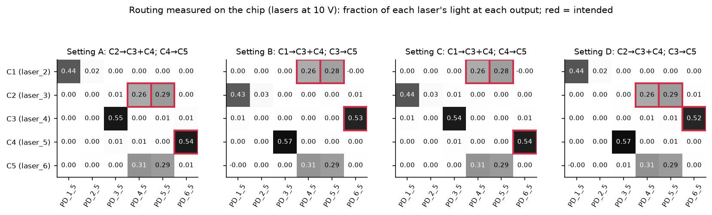
switch_timing.py)2_2 or 4_2, 20 times each way.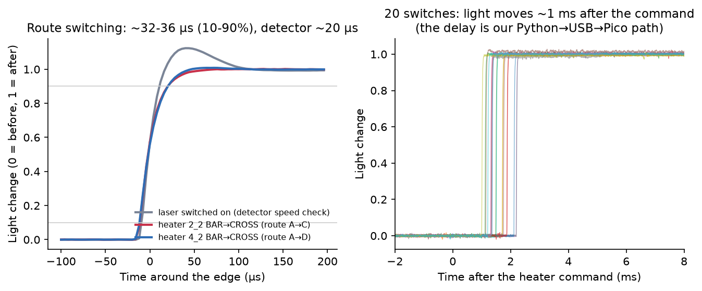
stream_check.py)The board can record detectors continuously while lasers pulse: all 400 pulse detections (80 pulses × 5 detectors) were correct, including 5 ms pulses, with zero false pulses. Laser switching causes brief one-sample electrical glitches on other detectors; we ignore them by requiring two consecutive samples above threshold.
pd_check.py)A colleague mentioned there might be no detectors on row 6. PD_6_5 passed three tests: it follows laser 5 on/off (1,528 nA vs 3 nA,
five cycles); the mid-chip row-6 detector PD_6_3 lights with it; and switching to setting B moves the light away to PD_3_5
(PD_6_5 drops to 0.6%). So row 6 has a working output detector.
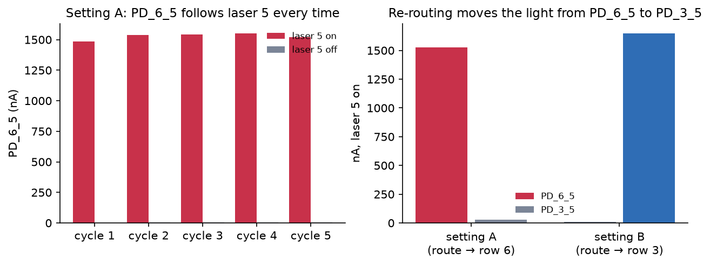
spike_replay.py)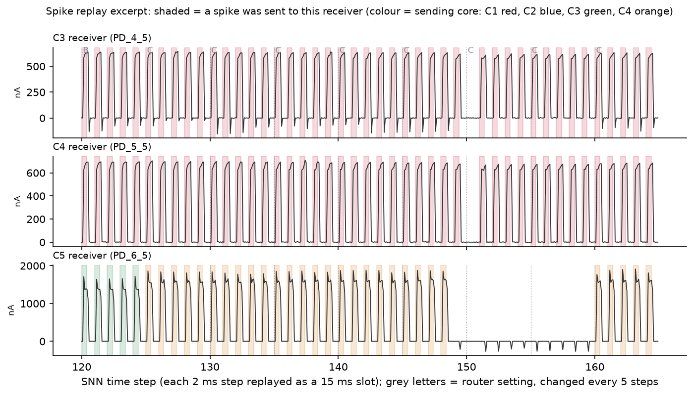
| 100 test digits (15,000 network steps, 1,328 route changes) | Result |
|---|---|
| All optical spikes | 39,812 with 29 errors (7.3×10−4) |
| Spikes in slots where the software kept time | 38,810 with 2 errors (5×10−5) |
| Spikes in slots hit by a software stall | 1,002 with 27 errors |
| False spikes (light arriving from the wrong core) | none in time-kept slots |
| Spike packets planned for light / delivered | 609,756 of 1,045,127 (58.3%) / 99.98% |
| Network accuracy using only the spikes the chip delivered | 91.0% = software 91.0% (no answer changed) |
The accuracy check reran the network step by step, letting spikes cross an optical link only when the chip had actually detected them.
The bus is a software model (there is no physical bus to congest), so this part is modelled, but it uses the measured delivery from the replay. Carrying 58% of packets by light is like making the bus 2.4× faster. Spike traffic is bursty (peaks 4–5× the average), so a bus sized for the average still queues at the peaks; the lanes remove most of that queueing.
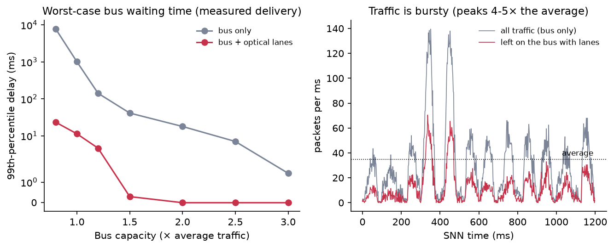
Honest catch. This small network sends only ~35 packets per millisecond, far below what real neuromorphic buses handle. A real chip running it would not congest. The result applies when a chip's traffic approaches its bus limit (bigger networks, more neurons per core, or slow low-power buses).
sim/scaling.py, simulation)We split the network over more cores (up to 33) and ran the same controller on an ideal larger mesh, for two networks: the original fully connected one, and a variant where each first-layer neuron only sees one patch of the image (locally connected, 88.2% accuracy).
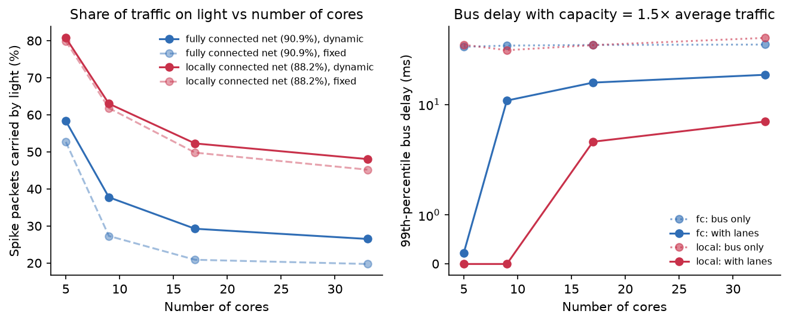
| Cores | Fully connected: share by light | Locally connected: share by light | Equivalent bus speed-up (local) |
|---|---|---|---|
| 5 | 58% | 81% | 5.2× |
| 9 | 38% | 63% | 2.7× |
| 17 | 29% | 52% | 2.1× |
| 33 | 27% | 48% | 1.9× |
| What | Result |
|---|---|
| Usable router | 5×5 on rows 2–6; 12 of 13 MZIs good (1_5 unreliable) |
| Laser threshold / operating point | 7.1–7.5 V / all lasers at 10 V |
| Detector noise | ~0.25 nA (spikes 600–1,600 nA) |
| Light reaching intended receivers | 95–99% |
| Multicast split balance | within 0.4 dB |
| Crosstalk margin | 15–28 dB (11 of 12 receivers); 14.4 dB at one |
| Route switching time | ~32–36 µs (10–90%), ~50 µs settled |
| Spike delivery | 39,812 spikes, 29 errors (7.3×10−4); 2 in 38,810 time-kept slots |
| Traffic carried by light | 58% (≈ 2.4× bus capacity) |
| Network accuracy with the chip | 91.0% = software |
| Heater power to hold a setting | ~40 mW per BAR heater, ~0.4 W total (CROSS ≈ free) |
Optical express lanes can carry the busiest spike traffic between cores with essentially no errors and no loss of accuracy, switch routes in ~35 µs, and relieve bus congestion. They work best when traffic is concentrated on a few core pairs, the same reason hybrid electrical/optical switching works in data centres (a slow optical switch for the few heavy flows, electronics for the rest).
1_5 unreliable; one receiver at 14.4 dB crosstalk.route_check.py on another day (stability); a "link margin" curve (errors vs light level); a fully closed-loop run.| Script | What it does |
|---|---|
board_config_6x6.py | Wiring: which board channel is which laser, heater and detector |
check_setup.py | Bring-up checks; also holds the detector reader with the readout fix (read_pds) |
laser_calibration.py | Laser power curves and pulse test |
heater_sweep.py | Heater calibration: BAR / CROSS / 50:50 voltages for each MZI |
readout_check.py | Tests the detector readout for leakage between channels |
laser_interaction.py | Tests whether lasers change each other's power |
route_check.py | Programs settings A–D and measures where the light goes (crosstalk, split, superposition) |
switch_timing.py | Measures route switching speed (and detector speed with --laser-step) |
stream_check.py | Tests continuous recording while lasers pulse |
spike_replay.py | Plays the network's spikes through the chip and checks what arrives |
pd_check.py | Verifies one output detector (default PD_6_5) |
sim/compile_routes.py | Finds every routing pattern the chip can make and the MZI states for it |
sim/traffic.py, sim/export_replay.py | Splits the network into cores, runs the controller, writes the replay schedule |
sim/train_snn.py, sim/train_local.py | Train the network (and the locally connected variant); save weights |
sim/scaling.py | Scaling study (more cores, bus delay, optical budget) |
report/make_figures.py | Regenerates the figures in this report |
| Result | Run file(s) in runs/ |
|---|---|
| Zig-zag, laser→row mapping | check_setup_20261019_174652 |
| Laser curves, thresholds | laser_calibration_20261019_223545 |
| Heater calibration (used by all later runs) | heater_sweep_20261019_221707 (1_5 also 183039, 184324, 205509) |
| Readout artifact before / after | readout_check_20261019_220602, readout_check_20261019_221422 |
| Laser interaction | laser_interaction_20261019_225404 (9.1–9.9 V), 224416 (10 V) |
| Routing, crosstalk (10 V) | route_check_20261019_230840 |
| Switching, detector speed | switch_timing_20261019_231107, switch_timing_20261019_231635 |
| Continuous recording | stream_check_20261019_232447 |
| 100-digit replay (raw) | spike_replay_20261019_235342 + sim/replay_excerpt.json |
| Error split by timing, accuracy rerun, bus delay | spike_replay_20261019_235342_analysis (made by replay_analysis.py) |
| Row-6 detector | pd_check_20261020_004855 |
| Scaling | sim/scaling_results.json |